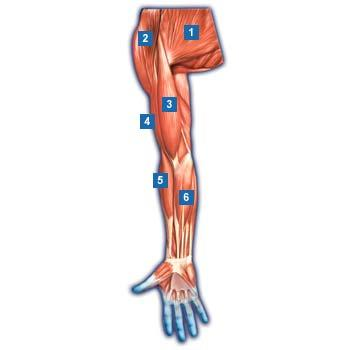
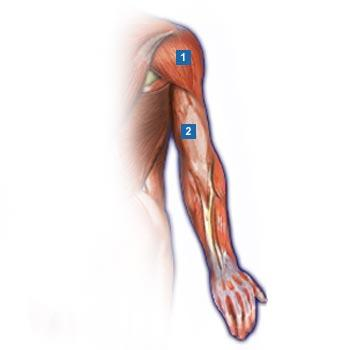
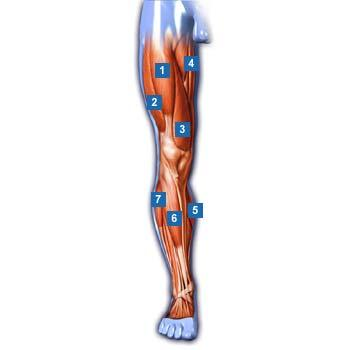
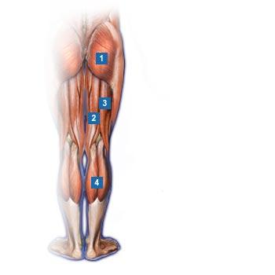
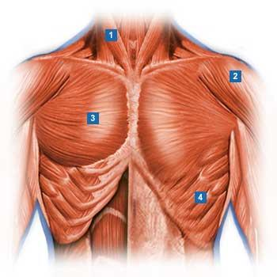
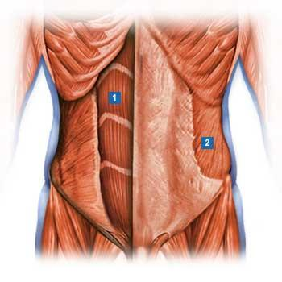
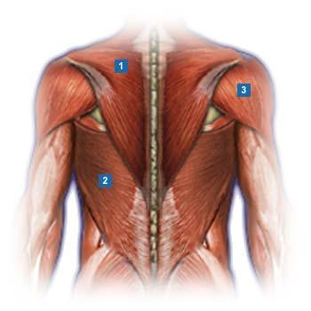

Katalogname: Muskel Quiz Fragenanzahl: 20 Gesamtpunkte: 20 Autor: Mag. Markus Braun [Info wurde aus Fragenkatalog ¸bernommen (ohne Gew‰hr!)]







Frage 8 von 20: Um welchen Muskel handelt es sich bei Muskel Nr. 5 und 6 ? (Arminnenseite) Rundmuskel Biceps brachii Trapezmuskel Fingerstrecker Biceps femoris Fingerbeuger
Frage 9 von 20: Um welchen Muskel handelt es sich bei Muskel Nr. 2 ? Biceps femoris Trapezmuskel Deltamuskel S‰gemuskel Triceps brachii Biceps brachii
Frage 10 von 20: Um welchen Muskel handelt es sich bei Muskel Nr. 1-3 ? Latissimus Biceps femoris Abduktoren Biceps brachii Adduktoren Quadriceps femoris
Frage 11 von 20: Um welchen Muskel handelt es sich bei Muskel Nr. 4 ? Abduktoren Biceps femoris Biceps brachii Quadriceps femoris Wadenmuskel Schienbeinmuskel
Frage 12 von 20: Um welchen Muskel handelt es sich bei Muskel Nr. 2 ? Kleiner Brustmuskel Triceps brachii Deltamuskel Grofler Brustmuskel Biceps brachii S‰gemuskel
Frage 13 von 20: Um welchen Muskel handelt es sich bei Muskel Nr. 2 ? Schr‰ger Bauchmuskel Rundmuskel Gerader Bauchmuskel S‰gemuskel Adduktoren Trapezmuskel
Frage 14 von 20: Um welchen Muskel handelt es sich bei Muskel Nr. 2 ? Triceps brachii Latissimus Trapezmuskel Deltamuskel S‰gemuskel Rundmuskel
Frage 15 von 20: Um welchen Muskel handelt es sich bei Muskel Nr. 1 ? Trapezmuskel Grofler Brustmuskel Schr‰ger Bauchmuskel Latissimus S‰gemuskel Deltamuskel
Frage 16 von 20: Um welchen Muskel handelt es sich bei Muskel Nr. 4 ? Adduktoren Abduktoren Schienbeinmuskel Grofler Ges‰flmuskel Quadriceps femoris S‰gemuskel
Frage 17 von 20: Um welchen Muskel handelt es sich bei Muskel Nr. 1 ? Kopfdreher Grofler Ges‰flmuskel S‰gemuskel Kleiner Brustmuskel Biceps brachii Trapezmuskel
Frage 18 von 20: Um welchen Muskel handelt es sich bei Muskel Nr. 2 ? Abduktoren Adduktoren Wadenmuskel Grofler Ges‰flmuskel Biceps femoris Halbsehniger Muskel
Frage 19 von 20: Um welchen Muskel handelt es sich bei Muskel Nr. 3 ? Rundmuskel S‰gemuskel Trapezmuskel Halbsehniger Muskel Kopfdreher Grofler Brustmuskel
Frage 20 von 20: Um welchen Muskel handelt es sich bei Muskel Nr. 3 ? Halbsehniger Muskel S‰gemuskel Rundmuskel Grofler Brustmuskel Deltamuskel Trapezmuskel